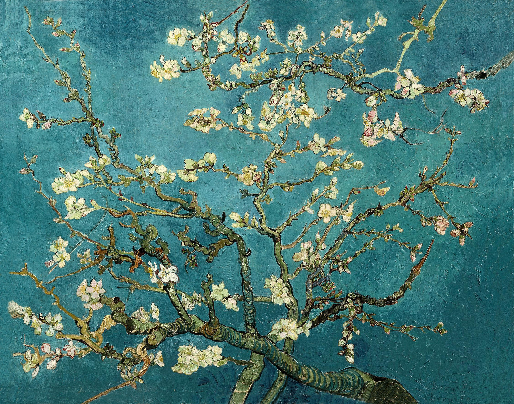
Almond Blossom - 1890Cafe Terrace at Night - 1888
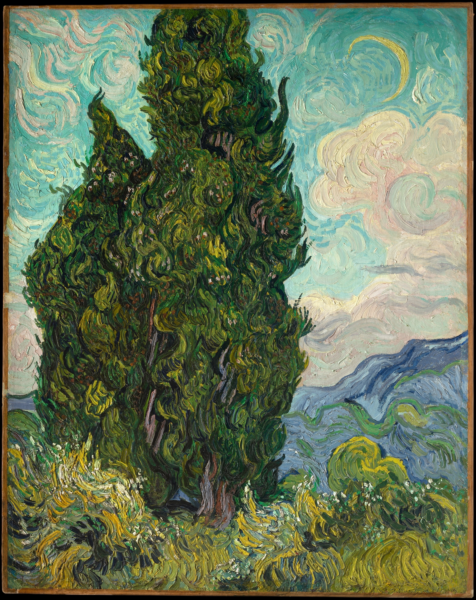
Cypresses - 1889
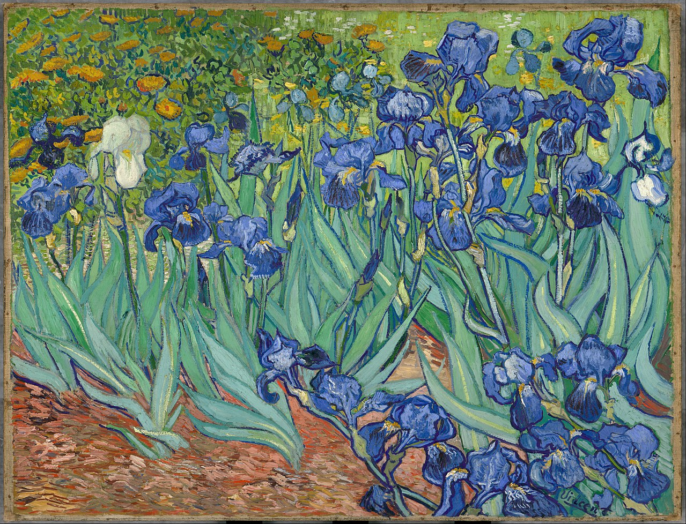
Irises - 1889
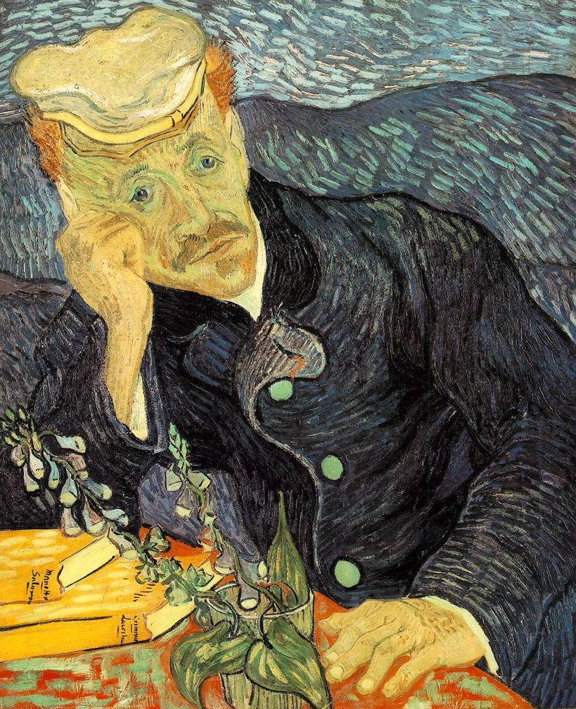
Portrair of Dr. Gachet - 1890
Portret van de postbode Joseph Roulin - 1888
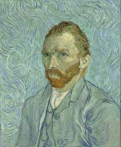
Self-Portrair - 1889
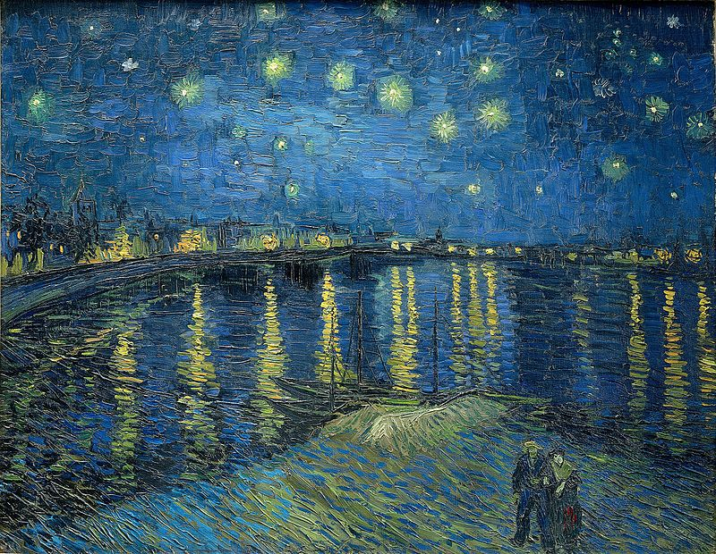
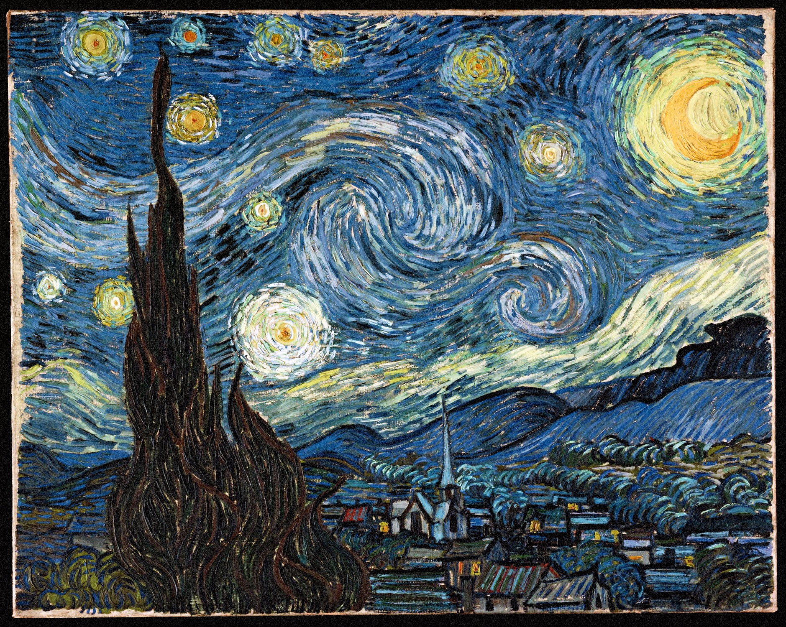
Starry Night Over the Rhone - 1888The Bedroom in Arles - 1888Almond Blossom - 1890
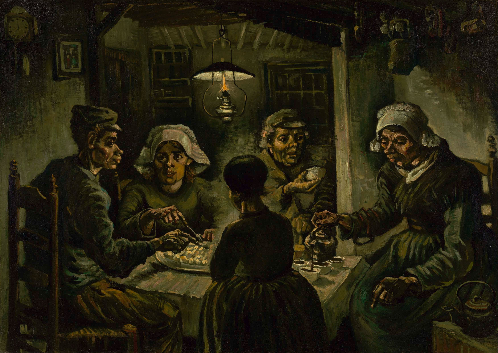
The Potato Eaters - 1885
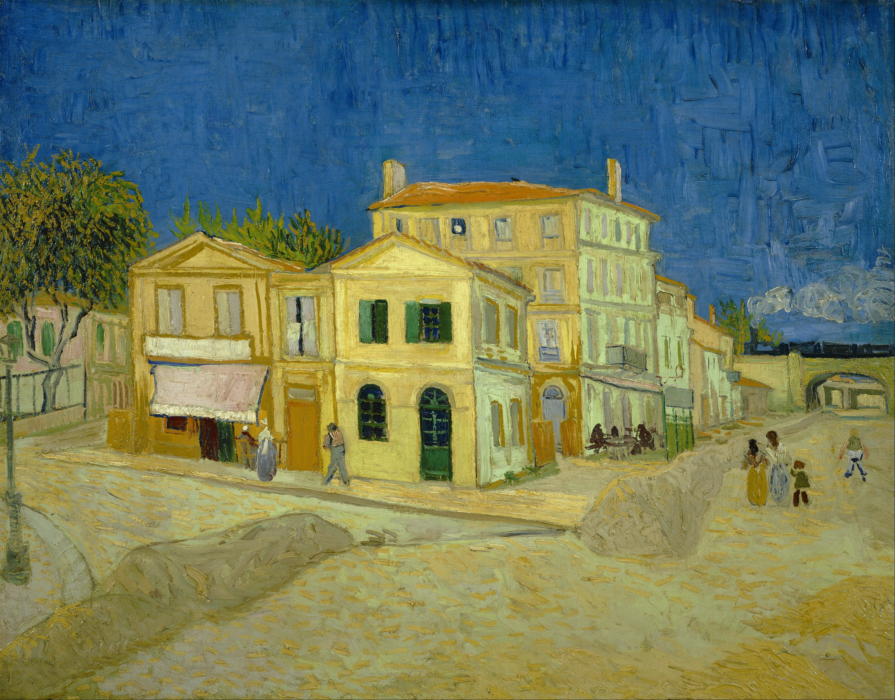
The Yellow House - 1888
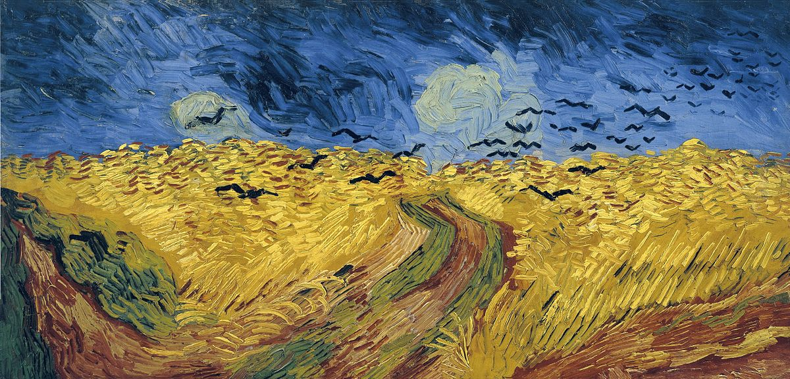
Wheatfield With Crows - 1890
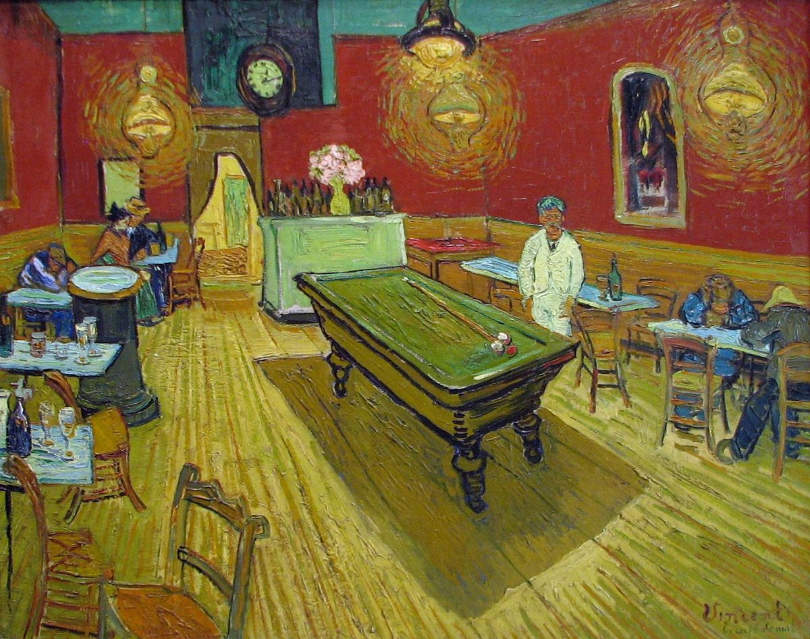
The Night Cafe - 1898
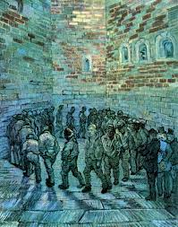
Prisoner's Round - 1890
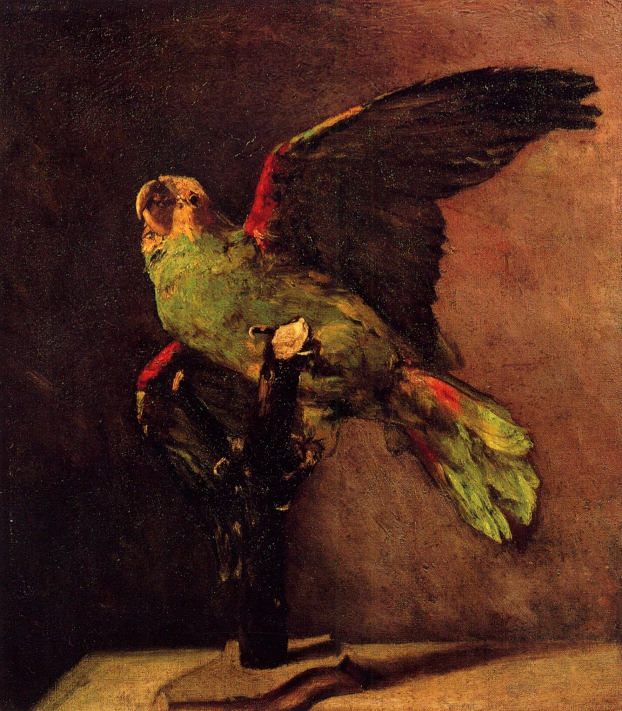
The Green Parrot - 1886
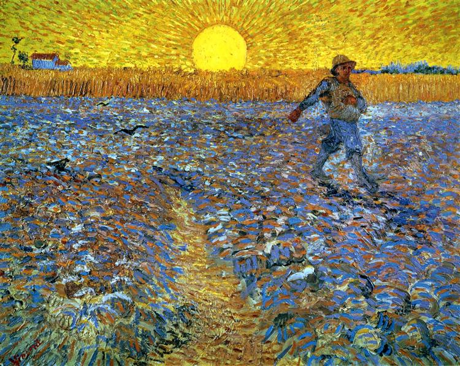
Sower With Setting Sun - 1888
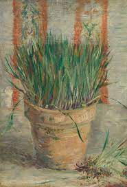
Flowerpot With Chives - 1887The Green Parrot - 1886
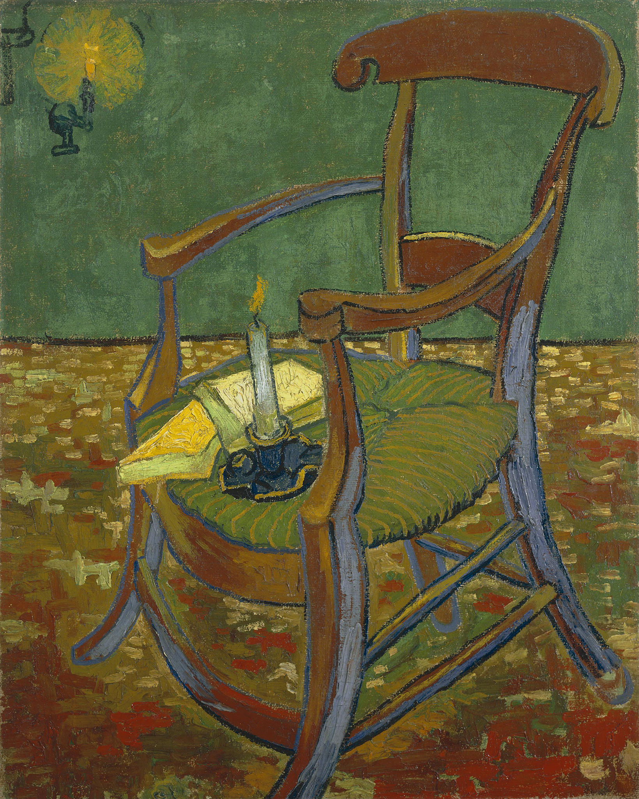
Paul Gauguin Armchair - 1888
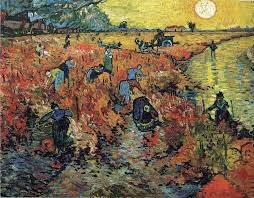
The Red Vineyard - 1888